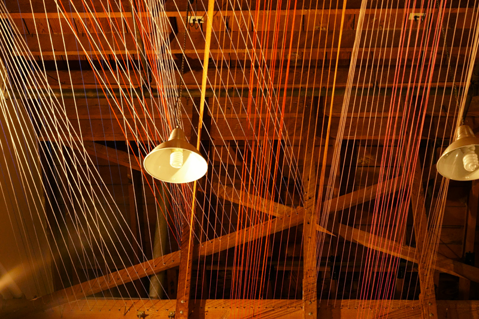
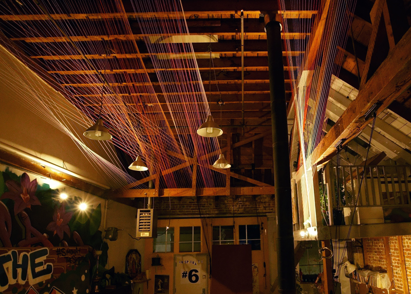
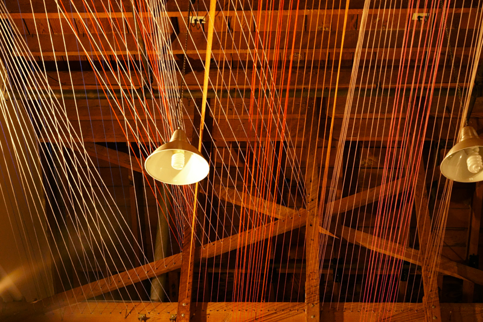
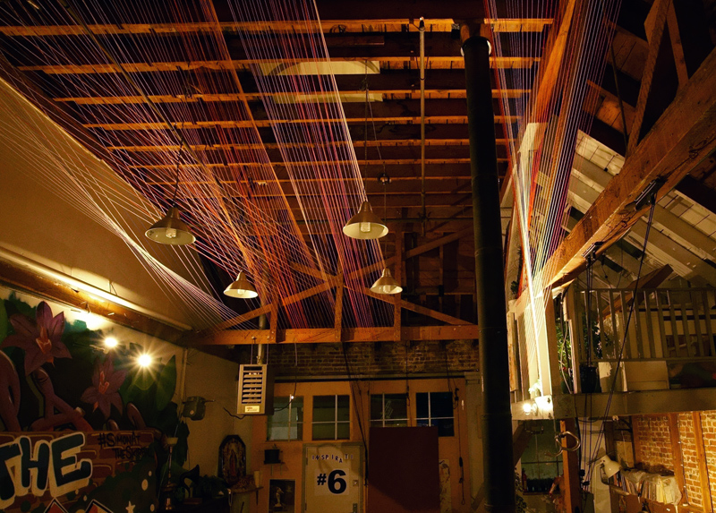
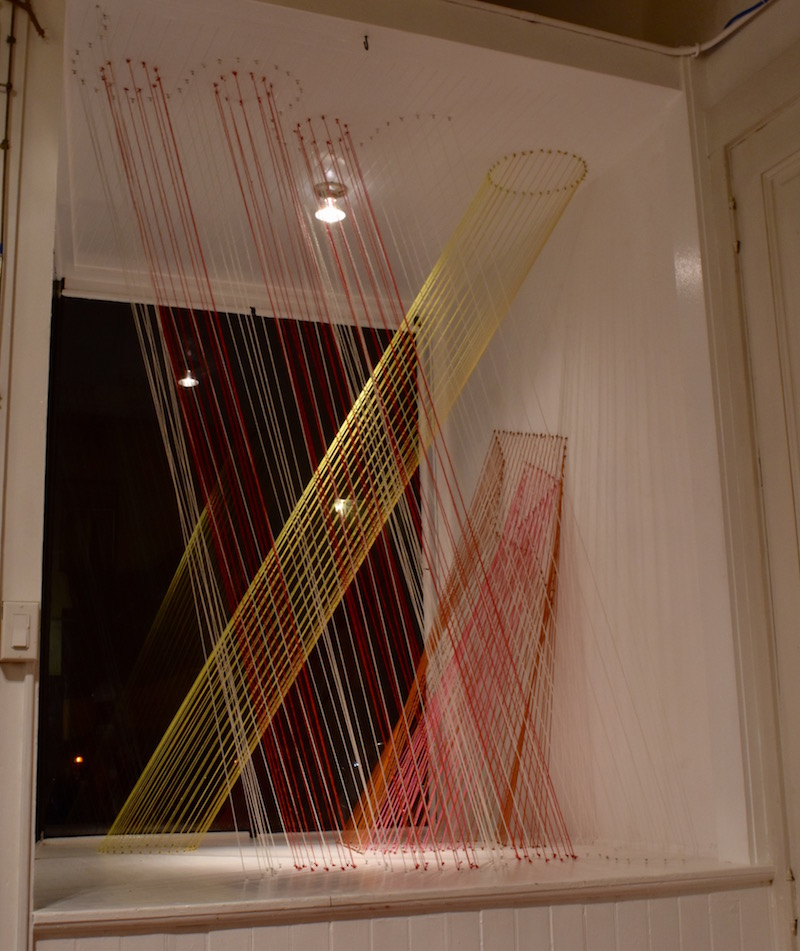
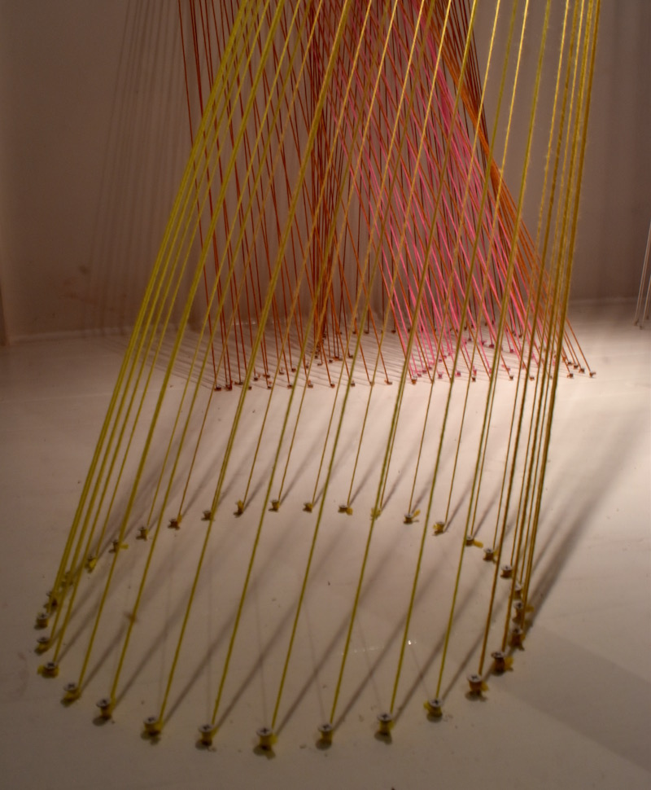
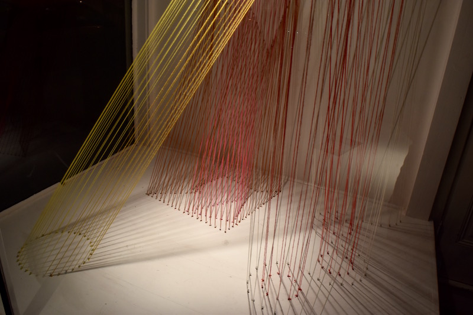
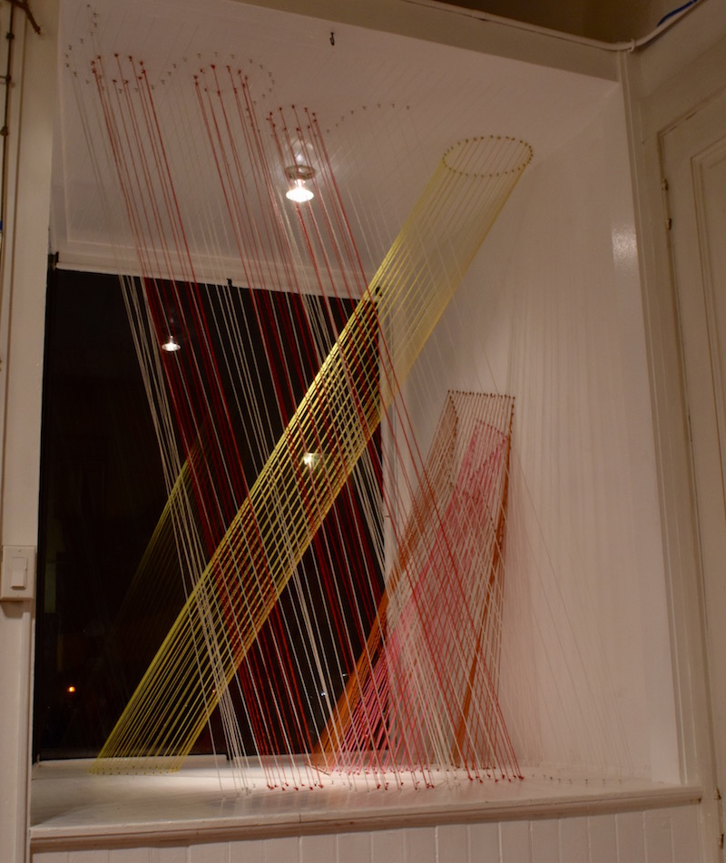
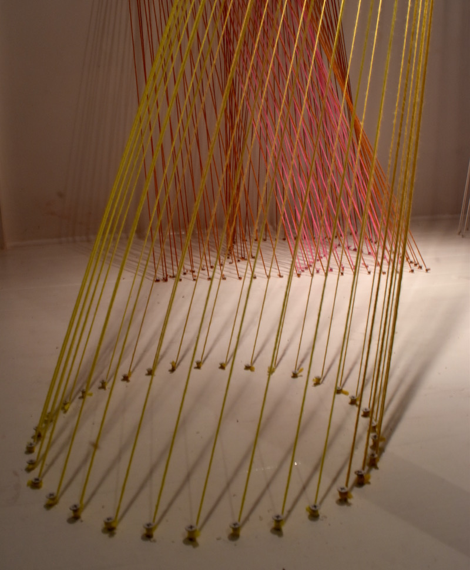
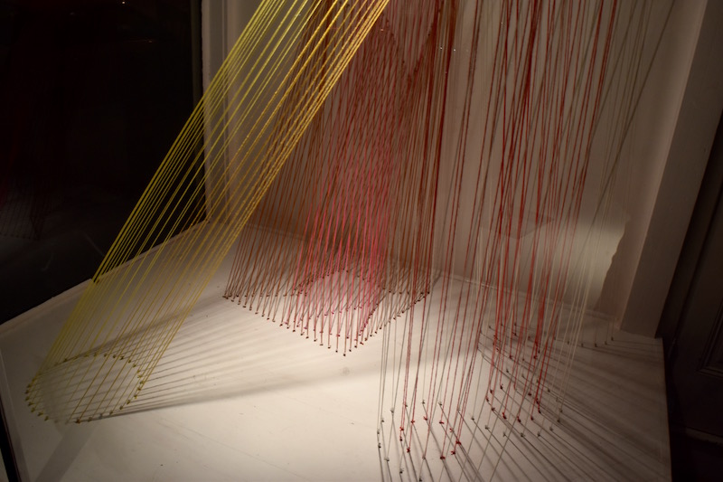

Shows
DELUXED
Solo exhibition for La Maison. Oakland, CA
Install view

Installations
Midpoint Between Field vs. Fields.
Site-specific installation for Windgrove. Roaring Beach, Tasmania.
Mixed Media · 10 x 30 x 60 ft. · 2017


Drapeaux + Tetons
Site-specific installation for La Maison. Oakland, Ca.
Acrylic, wool, and cotton yarn, painted screws. 6 x 18 x 25 ft. 2017

 



Philanthropic Gestures
Site-specific installation for Tomorrow, Today @ Luggage Store Project Space. San Francisco, Ca.
Acrylic yarn, painted screws. 6.5 x 5.5 x 6.5 ft. 2016
 





Fourth Planet, Full Circle.
Site-specific installation for private residence in Hobart, Tasmania.
Acrylic yarn, painted screws · 7.5 x 5 x 10 ft. · 2013


Study for a Trellis
Temporary site-specific installation for Towson University.
Acrylic yarn, painted nails. 5.5 x 5.5 x 8.5 ft. 2010


Embroidery / Painting
Bitch Won.
She ate her enemies and birthed them out 28 days later.
The Great Extinction came and went, devouring the planet with a plastic spork.
One catastrophe at a time.
Only the stones and monoliths and cockroaches remained.
Mutable painting. Photographic print. 2017

Mother Earth To Venus. Mutable Painting. Photographic Print. 2017

Untitled. Mutable Painting. Photographic Print. 2017

The Space Between My Eyes. Kiss Me There. Mutable Painting. Photographic Print. 2017

Perm Salon. Mutable Painting. Photographic Print. 2017

Blue Plasma in Deep Motion. Mutable Painting. Photographic Print. 2017

Damas. Brass on satin. 24 x 24 in. 2017

Genesis of the Cosmos thru Pangaea. Wool and thread on linen. 15.5 x 15.5 in. 2016

Concealer. Thread and print on synthetic suede. 29 x 48 in. 2015

Fields. Acrylic and latex paint, mixed media on canvas. 24 x 24 in. 2014
Dimensions of a Compliment. Acrylic, gouache, and thread on lycra. 20 x 20 in. 2014

Drugs: An Ode to Narcissism. Mixed media, and acrylic thread on silk and cotton. 42 x 28 x 5 in. 2012

Carnival in Ferris. Acrylic yarn, thread, and watercolor on linen. 20 x 20 in. 2011

Solar Drips on the Adobe Sunset. Acrylic yarn on linen. 14 x 14 in. 2011

It's All Good in the Hood. Acrylic yarn, thread, cotton, and watercolor on corduroy. 38 x 26 in. 2011

This Very Same Tempest Which Destroyed Their Vessel, Brought in a Swell and Breath of the Dawn. Acrylic on silk, satin and corduroy. 12 x 26 in. 2011

The Immaculate Conception. Acylic thread and copper nails on silk chiffon. 12 x 14 x 3 in. 2010

Murals
477 Haight Street Mural, San Francisco
Breasts L to R: The Nursing Mother, The Flat Chest, The Man Breast, The Sagging Sort, and The Mastectomy
Spray paint, latex paint, gold shellac, and aluminum panels. 8 x 20 ft. 2017
Light Sensitive Constructions: Imprinted Shadows
Genesis. Mixed Media, Framed. 26 x 30 in. 2015.
A Friend of a Friend of a Friend. Mixed Media. 14 x 15 in. 2015.

Prints
Chatter Teeth. Oil-based ink monotype and chine-collé. 10 x 10 in. 2012.

Chevroll. Oil-based ink monotype. 24 x 24 in. 2012.

Harem Conundrum. Oil-based ink monotype. 6 x 6 in. 2012.

Latex Swoon. Oil-based ink monotype. 6 x 6 in. 2012.

While You Were Laughing. Oil-based ink monotype. 26 x 26 in. 2012.

Study of an Imposition. Oil-based ink monotype. 6 x 6 in. 2012.

Ode to Seasonable Wobbles. Oil-based ink monotype. 8 x 8 in. 2012.

Jolly, With a Knife. Oil-based ink monotype. 13 x 6 in. 2012.

Harlem Lover. Oil-based ink monotype and chine-collé. 9 x 15 in. 2012.

Crisp Kringle. Oil-based ink monotype. 13 x 6 in. 2012.

Shadow Shape-Shifter. Oil-based ink monotype. 9 x 15 in. 2012.

Urban dictionary series
Nameless, faceless Internet identities that act unchecked by personal or moral accountability provide the source of inspiration for my series, “Urban Dictionary“. It takes its raw material from two divergent sources. One of these are the crude definitions for sex acts from the popular website Urbandictionary.com. These explicit and misogynistic “jokes” demean and dehumanize intimacy, characterizing it in terms similar to video game conquests. The other source is used prom dresses. These garments symbolize the excessive lengths taken to fulfill the overly romanticized expectations inherent in our cultural tradition of prom night. In the United States, prom night is one of the most anticipated events in a girl’s high school career; and of recent tradition, is also a night when they lose their virginity. These dresses symbolize teenage girls’ visions of love and sexuality.
Both mindsets represent an immaturity of sorts, but the juxtaposition of the two provide the ingredients for questions regarding the ethics of humor. The dresses are deconstructed and reused to make tapestries and objects which incorporate in their design the title of the joke and the number of assenting “thumbs up” and dissenting “thumbs down” votes provided on the website.
Four of the pieces in the series are pictured below:
Angry Dragon
Prom dress, thread, embroidery floss, and votes referring to Mason’s definition on UrbanDictionary.com


Jelly Donut
Prom dress, thread and votes referring to user Sikwill’s definition on UrbanDictionary.com


Donkey Punch
Prom dress, thread, polyester fiberfil, and votes referring to user Mh’s definition on UrbanDictionary.com

Angry Pirate
Prom dress, thread and votes referring to j money’s definition on UrbanDictionary.com